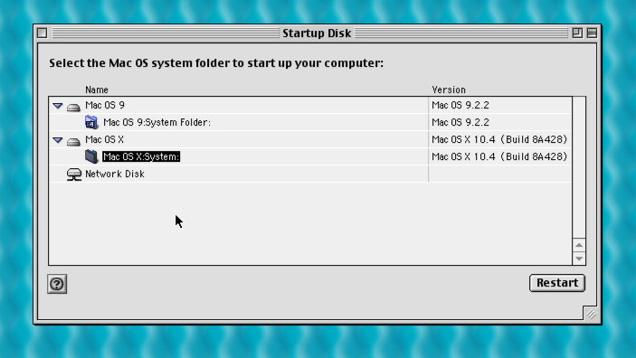
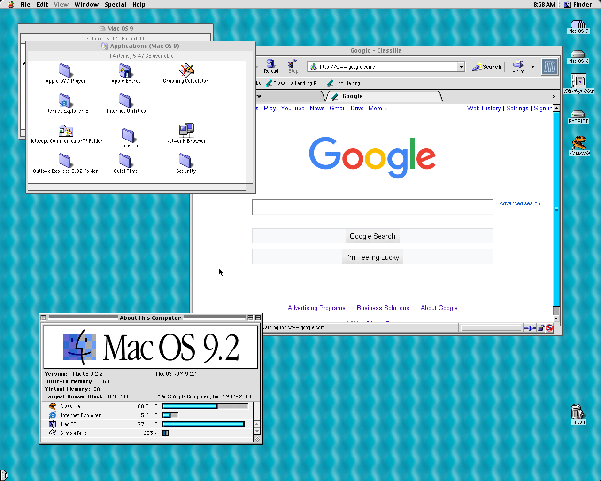
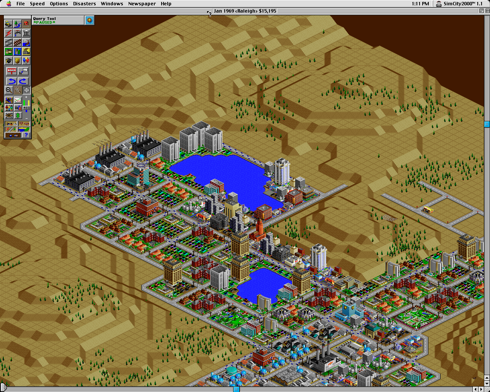
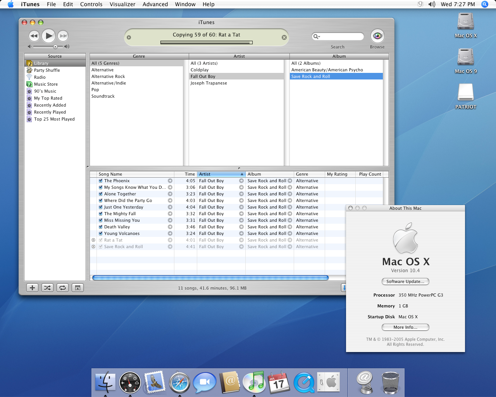

I’ve had a PowerMac G3 in my possession for a while, and I had plans for a while to turn it into a half-retro setup for software and games I grew up with. I finally got around to doing just that, so here’s how I did it!
The specific model I have here is the Power Macintosh G3 350, released in 1999 with the same blue/white aesthetic as the first iMac. It has a translucent plastic shell, with “G3” appearing behind the blue Apple logo. There are also handles on all four corners. I don’t know why there aren’t more modern PC cases with something like this design.
The hardware configuration I’m starting with includes a 350 MHz PowerPC 750 CPU, an ATI Rage 128 GL graphics card, a CD-ROM drive, a 6GB hard drive, and 128 MB of RAM on a single SDRAM slot. The RAM must have been upgraded at some point, because a sticker on the back side says the computer shipped with 64 MB RAM.

The back has all the ports and PCI card slots, and even though this computer is over 20 years old, it’s still reasonably interoperable with modern-day PCs. There are two USB 1.1 ports, sharing a single I/O channel, as well as two FireWire 400 connectors. There’s also a 10/100 Ethernet LAN jack. Both the CD drive and hard drive were still working, which was absolutely a surprise to me, considering how failing CD/DVD drives were a common occurrence on Macs throughout the 2000s.
I started going through my book of boot CDs for something that would run on the G3 — or at least, run long enough for me to check all the hardware details. Thankfully, I still had the installer for Mac OS X 10.4 ‘Tiger’ on a series of 4 CDs that I found somewhere online ages ago (my DVD retail copy of Tiger isn’t recognized in this CD drive). Tiger took several minutes to boot and was incredibly slow, and upon opening System Profiler, I discovered the low amount of RAM — half the recommended minimum for Tiger, but plenty for OS 9.

Even though the PowerMac was technically working, it didn’t have the best hardware for what I wanted to use it for. My goal was to have a Mac that could boot into either Mac OS 9 (the last version of the ‘Classic’ Mac OS) or Mac OS X 10.4 ‘Tiger’ (released in 2005).
Mac OS 9 has the best compatibility with pre-2001 Mac software, and I never played around with it much growing up, so I thought it would be fun to experiment with. Mac OS X Tiger was what I used for a big chunk of my childhood, and it just so happens to be the last major release that this computer is capable of running. Mac OS X 10.5 ‘Leopard’ bumped the minimum CPU requirement to a G4 (867 MHz or faster), and Mac OS X 10.6 dropped support for PowerPC Macs entirely.
This computer was built for Mac OS 8 and 9, so the computer can handle those in its current form without any upgrades. However, Mac OS X is a different story — 10.0 and other early versions wanted 128 MB RAM as a minimum, and Tiger needs at least 256 MB RAM.

With that in mind, I bought a two 512 MB modules of PC100 Non-ECC RAM, since 1GB in total is the maximum amount of RAM (according to EveryMac). I also wanted to replace the hard drive with an solid-state drive for the best-possible performance and longevity, and also because the original 6GB drive was bound to die at some point. I bought a Silicon Power SATA 128GB SSD (again, the maximum supported capacity), as well as a SATA to PATA/IDE adapter, because this computer doesn’t directly support SATA.
Annoyingly, the SATA adapter seemed to suddenly stop working halfway through installing any operating systems, with the Mac treating it like a corrupted disk. The RAM I ordered also ended up being two 256 MB modules, not 2x 512 MB.

I ordered two more 256 MB sticks, which used all four DIMM slots for a grand total of 1GB. I also bought the “StarTech.com IDE to SATA adapter” to replace the buggy first adapter, which worked perfectly. With everything working, I was ready to actually install everything!
My retail install CD of Mac OS 9.0.2 didn’t get past the boot screen (it complained about QuickTime crashing), so I downloaded a universal install CD image for Mac OS 9.2.2 from Macintosh Repository. That was the final version of the classic Mac OS, and by that point, most of the bug fixes were related to running under Mac OS X’s Classic Environment.
As far as I know, there’s no way to boot OS 9 from USB on these Macs (though it’s usually possible with OS X), so I bought some blank CDs and burned the ISO to one. I put in the newly-minted disc in the Mac, booted from the CD, and it worked!
Before starting this process, I read that some Macs from around this time had two limitations with partitioning large drives: the first partition can’t be larger than 8GB, and if you’re using Mac OS X at all, it must be installed to that first partition. I haven’t tested if either of those issues apply with my specific G3, but to avoid potential issues, I split the hard drive into one 6 GB partition and one 113 GB partition (both formatted as HFS+). Then I installed Mac OS 9 first to the 6GB partition (so I guess OS X doesn’t have to be on the smallest partition for me), and once that was done, I booted my Tiger CDs once again and installed it to the 113 GB partition.

The end result was a snapshot of the late 1990s Mac experience on one partition, and my own childhood Mac experience on another partition. Switching between them was as easy as opening a Control Panel (on OS 9) or System Preferences (on OS X) and rebooting.
Mac OS 9 works flawlessly on this upgraded PowerMac G3. The official system requirements only ask for 40 MB RAM, a hard drive, and any PowerPC CPU, so it’s probably not surprising that giving Mac OS 9 a solid state drive and 1 GB RAM results in a snappy experience.

Admittedly, I haven’t installed many applications and games yet in Mac OS 9. SimCity 2000 is my go-to classic Mac game, but that dates back to 1993 and even works on older Motorola 68k-based Macs, so it’s not much of a challenge for the G3. Once I increased the game’s minimum memory size to 10MB from the Finder, it even worked full-screen at my monitor’s native resolution of 1280×1024. I also installed AppleWorks 6 from a recovery CD that came with another Mac, which was Apple’s office suite package before iWorks came along in 2007.

The most surprising aspect of Mac OS 9 to me is how compatible it is with modern technology. I mentioned earlier that this PowerMac has USB 1.1 ports, so I can copy data back and forth with any flash drive (as long as it’s formatted as FAT32). Mac OS 9 even supports USB audio, so with a simple USB Type-A-to-C adapter, I can plug in the wireless receiver for my Steelseries Arctis 1 headset. It’s wild that I can use the same headset with my modern PC and this 20 year-old computer.
The Ethernet port also works well, and I’ve used Android’s Ethernet-based tethering feature to connect the PowerMac to my local Wi-Fi network. The only catch with this tethering setup is that I can’t access any servers or file sharing on the PowerMac on another computer, connecting to local servers (and the external internet) from my PowerMac still works.
Netscape Communicator 4.77 was pre-installed with Mac OS 9, which doesn’t really work anymore, but the more modern Classilla web browser can load Google search results and other sites with decent support for older browsers. With that setup, I can actually browse and download software from Macintosh Repository without swapping files back and forth from a modern PC.
Mac OS X 10.4 Tiger is a little bit rougher on the PowerMac G3. That’s pretty understandable, given Tiger was released six years after this computer, and was ultimately the last version of Mac OS to (officially) support the G3 architecture. Mac OS X 10.5 Leopard required a 867 MHz G4 or better, and OS X 10.6 Snow Leopard removed support for PowerPC entirely.

Tiger boots up quicker than Mac OS 9, at around 40 seconds from pressing the power button to reaching the desktop (with automatic login enabled), but it’s more of a sluggish experience than on OS 9. Animations like magnification on the Dock and opening the widget panel on the Dashboard aren’t smooth at all, but moving windows around on the desktop and other simple tasks are smooth.
Again, I haven’t set up much third-party software yet. I tried installing iLife ’05 first, which includes early versions of iMovie and iPhoto, and I have been able to make a simple movie. I was disappointed that iWeb (included in iLife ’06 and onwards), Apple’s WYSIWYG web publishing application that I used a lot, never supported G3 Macs. I was hoping to make a simple site and publish it using GitHub Pages, but that will seemingly have to wait until I get a more modern Mac — or set up a Hackintosh and use the Intel Mac version.
I still have my own music collection as MP3 files, so it was easy enough to copy a few albums to iTunes. It has no problem playing my 312kbps MP3s, though the music sounds a bit more tinny than with the same headset and songs on my other devices.

I was hoping to try the visualizers again, but sadly they only run at a few frames per second on this computer. I distinctly remember subsequent versions of iTunes running significantly slower on PowerPC Macs, especially iTunes 7, so I plan to avoid updating iTunes further on this computer. I might also try installing earlier versions of iTunes in the Mac OS 9 layer and see if visualizers work there.
Speaking of updates, Apple has seemingly kept the servers running for Mac OS X’s Software Update. When I connect the PowerMac to my local network (the same Ethernet setup I use with OS 9 works fine), I have the option of updating the system (to v10.4.11) and some system apps. That’s kind of neat.
Mac OS X Tiger has built-in a FTP server, so in theory, I could connect to it from any computer on my network to copy files back and forth without the slower USB connection or any third-party software. However, as mentioned above, Android’s Ethernet tethering seemingly doesn’t allow the Mac’s IP address to be accessible with other devices. In the end, a FAT32-formatted flash drive is still the easiest way for me to get files to and from the PowerMac, which works equally well with OS 9 and OS X (it’s just really slow).
I set out to turn this PowerMac into something that could switch between two classic Mac experiences, and I’m pretty happy with the results. I didn’t have to replace any dead components, and both the upgrades I wanted did work in the end. There are still plenty of software and games I want to try, so maybe I’ll write another post in the future.

My only disappointment is that Mac OS X Tiger is a bit slow on this computer, and some of the software I really wanted to try (like iWeb) turned out to be incompatible with G3 Macs entirely. Still, I have many options for running OS X software from the mid and late 2000s — G4 and G5 Macs are plentiful on eBay, and Intel Macs (or a Hackintosh setup) running OS X 10.4 or 10.5 can run most applications intended for PowerPC CPUs. Where this machine shines is its ability to boot into Mac OS 9 natively, which not all PowerPC-based Macs can do.
Now, if you’ll excuse me, I’m going back to SimCity.